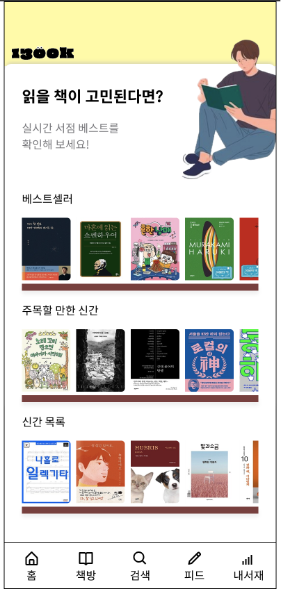
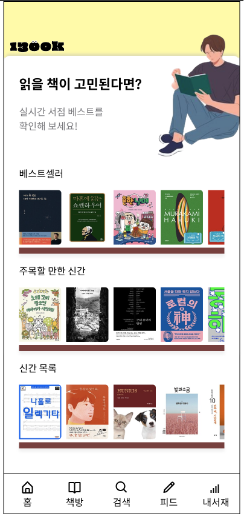

도전! 독서기록
모바일 APP 리디자인
포스리스조(김민재, 장원준, 권지민)
#Mobile
#Figma
#App
#Team_project
#Redisign


모바일 APP 리디자인
포스리스조(김민재, 장원준, 권지민)
- 페이지 로딩 화면으로 3초가 지나면 로그인 페이지로 이동합니다.
- 특정 아이디와 비밀번호를 설정해서 로그인이 가능하며 카카오톡 로그인도 가능합니다.
- 우측 상단에 각 해당 페이지를 이동할 수 있는 토글 메뉴 를 만들었고 하단부분 +버튼을 누르면 검색창으로 이동합니다.
- 검색창에 책명을 검색하면 검색 관련 책들이 나오고 책을 누르면 책에 대한 정보가 나옵니다.

 

- 저장 버튼을 누르면 읽은 책, 읽고있는 책, 읽고싶은 책으로 나눠서 저 장할 수 있습니다.
- 읽고싶은 책이 없을때 베스트셀러와 신간 책들을 추천해주는 페이지입니다.
- 내서재에서 저장한 책들을 선택해서 기록하고 저장할 수 있는 페이지입니다
- 내서재 페이지는 검색창페이지 부분에서 저장했던 책들을 읽은책 읽고 있는 책 읽고 싶은 책 부분으로 나뉘어서 볼수 있습니다.